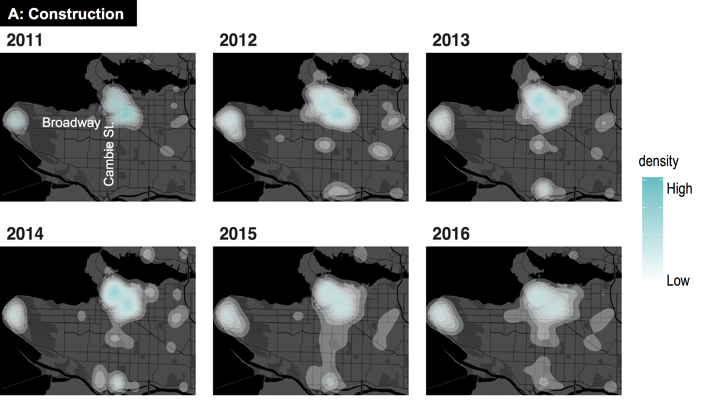

Smart Cities for Health
Using crowd-sourced “big data” to tackle noise pollution in a rapidly growing city
August 14, 2018
Andy Hong, PhD
Lead Urban Health Scientist
George Institute for Global Health
University of Oxford
A little bit about me

- Lead Urban Health Scientist at the University of Oxford
- Co-founder of Healthy Cities Network
- Studied informatics, urban planning, and public health
- Bike commuter and hiker

Today's Agenda
- Smart cities and Internet of Things
- Open data, open government
- Application of open data: Noise 311
- Implications and way forward
1. Smart cities
Smart cities = Connected Cities
Real-time sensors = Big data

Example: City Sensor
2. Open data
Open data, open government
- Open data movement
- Smart cities, smart government
- More than 200 US cities/counties have open data
- Big cities leading the open data movement

NYC open data

NYC open data
- More than 1,500 datasets
- A broad range of topics: e.g. budget, crime
- So much data generated every minutes
- Big cities = big data = big tasks
- From big data to smart cities
New school, new era

Vancouver open data
3. Application of Open data
Noise 311 study
Hong et al. 2018. Noise and the City
Construction noise

Serious Annoyance
Sources of urban noise

Vancouver 311 call center
- Garbage disposal
- Road maintanenance
- Graffiti removal
- Noise complaints
- ...

Major Constructions

Construction and noise
Heatmap of construction
Heatmap of noise complaints
Statistical approach

Model results
Noise by-laws in Vancouver
Noise during after hours
Super users
4. Way forward
Policy Implications
- Gap between policy and reality
- Noise by-laws, not a good deterrent
Policy Implications
- Potential of crowd-sourced data
- Potential of big data platform
Multi-city noise sensing
Noise IoT Platform
Potential collaboration
- Korea-UK partnership
- Partnership between KIST and Oxford
- Other partnerships: WHO, OECD
- Potential collaboration with Green City Technology Institute
- Comparative study of Seoul and London
- Air/noise/water pollution and health
- Between-floor noise (층간소음) study
- Pollution-free, stress-free cities study